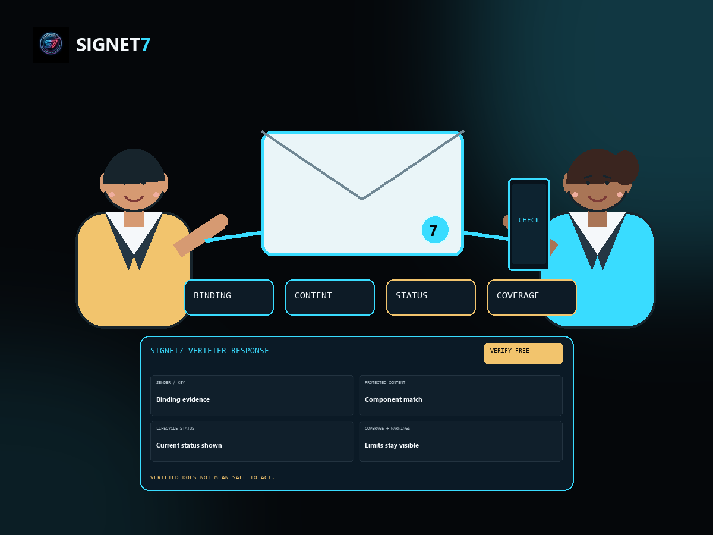

01
Invoices and payment instructions
Freelancers, bookkeepers, contractors, and microbusinesses can protect the content clients are expected to rely on. Signet7 does not approve payment or prove bank details are prudent.
Signet7 is the trust layer for consequential email—used by organizations, professionals, and the individuals who rely on their messages. Before you act on an important email, Signet7 is designed to help you check who sealed it, identify which components were protected, detect changes to those components, and preserve a portable verification receipt.

Display names, familiar branding, writing style, apparent addresses, and old conversation threads can all look convincing. When an email could cost money, change rights, expose sensitive information, or become evidence later, recipients need a calm way to inspect stronger proof before acting.
Freelancers, bookkeepers, contractors, and microbusinesses can protect the content clients are expected to rely on. Signet7 does not approve payment or prove bank details are prudent.
Protect covered clauses, scope changes, notices, and attachments so a recipient can detect later changes and retain a result.
Title, legal, financial, medical, employment, and insurance workflows can sponsor free recipient checks through bounded B2B2C pilots.
The approved direction keeps recipient verification free wherever operationally viable. Trusted senders, professionals, businesses, and enterprises fund signing, managed identity, lifecycle, administration, integrations, support, and retention.
s7-email-1 signing and verification for supported MIME messages.VSN remains Signet7’s managed trust layer for enrollment, discovery, key status, rotation, revocation, recovery, administration, scale, support, and abuse controls. The pivot broadens who benefits; it does not demote the infrastructure required to make trust dependable.
The source contains trust-binding, enrollment, local lifecycle, and DNS-discovery foundations. The complete managed VSN service and its operating controls remain planned.
The first proposed cohort is freelancers and microbusinesses testing invoices, bank-detail changes, contracts, scope changes, and payment approvals in a bounded four-week pilot. Higher-risk institutional workflows begin with simulations or lower-risk communications.